Создание игр в Roblox Studio
Денежная система Roblox. Часть 1
Внутриигровая денежная система
Создание денежной системы
Внутриигровая валюта устроена достаточно просто - это просто переменная, привязанная к конкретному игроку. Обычно количество денег отображается в интерфейсе, в котором просто выводится значение этой переменной.
Так как к значению должны будут получать доступ различные объекты (враги, интерфейс, магазин), оно должно быть вынесено во внешнюю переменную и храниться в месте, привязанном к конкретному игроку. Как и в 7 модуле при работе с квестовыми переменными, создадим внешние значения в рюкзаке игрока.
Найдите папку StarterPack в окне Explorer и добавьте дочернюю папку Variables. Внутри нее добавьте объект intValue, переименуйте его в Cash:
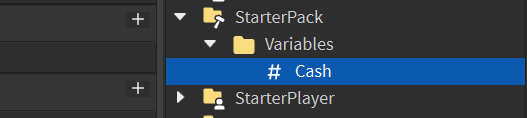В этой внешней переменной будет храниться количество денег игрока. Даже если персонаж игрока умрет, значение сохранится и не изменится при респауне.
Создание интерфейса для отображения количества валюты
Теперь добавим интерфейс для отображения текущего количества валюты. В сервис StarterGui добавьте специальный объект ScreenGui, после чего добавьте дочерний объект Frame:
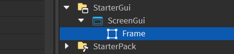Растяните фрейм на верхнюю часть экрана тонкой полоской - это подложка под элементы интерфейса. Измените его цвет на темный и прозрачность на 0.5-0.65.
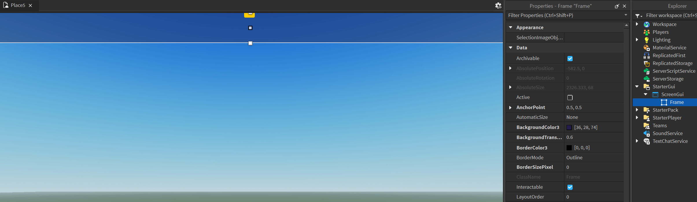Далее добавьте дочерний объект TextLabel. Настройте текст так, чтобы он подходил по стилистике и замените надпись (параметр Text) на количество денег:
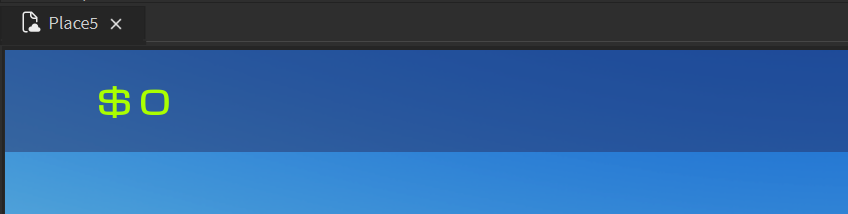Теперь необходимо сделать так, чтобы текст этой надписи менялся в зависимости от значения переменной Cash, созданной ранее. Добавьте объекту TextLabel дочерний локальный скрипт (LocalScript). Скрипт должен постоянно отслеживать количество денег локального игрока и изменять параметр Text родительской надписи в соответствии с ним.
Добавим ссылки на игрока и родительскую надпись:
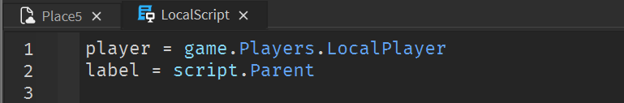Создадим бесконечный цикл, который будет проверять интересующее нас значение и записывать его в переменную:
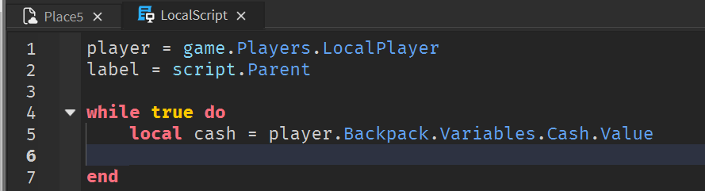Далее необходимо сделать так, чтобы в тексте надписи отображалось не только значение, но и поясняющий префикс, в данном случае знак доллара. То есть отображаться должно не, например, 400, а $ 400. Чтобы это сделать, необходимо «сшить» текстовое и числовое значения.
Это делается при помощи конкатенации строк - объединения нескольких значений в одну текстовую строку. Чтобы объединить два текстовых значения, в LUA используется специальный оператор «..».
При помощи конкатенации соединим префикс и количество денег игрока. После этого также добавим небольшую задержку перед следующим повтором цикла:
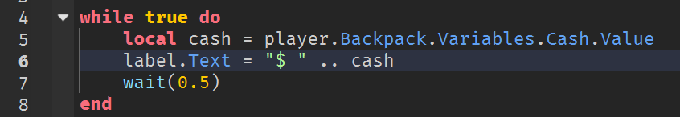Изменение количества валюты
Добавление противника
Теперь добавим бандита, за убийство которого игрок получит деньги. Для этого занятия подготовлен специальный бандит, найдите его в тулбоксе по названию Coddy_Thug и добавьте на карту.
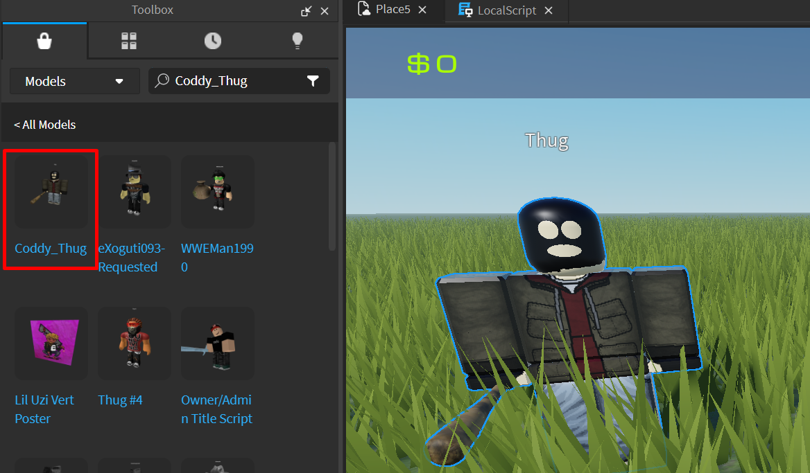Это - спаунер бандита. Как только бандит умрет, спаунер создаст нового в изначальной точке размещения. Раскройте иерархию объекта в Explorer и найдите скрипт Respawn.
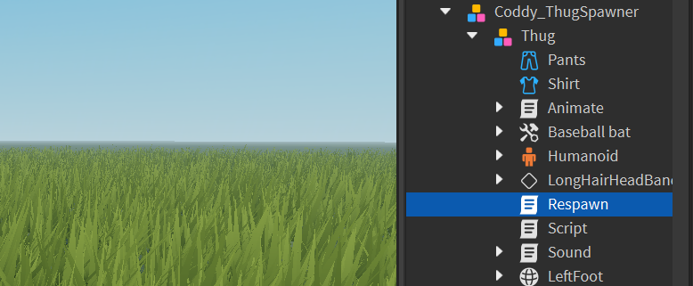Этот скрипт отслеживает здоровье бандита и в случае, если его здоровье падает ниже 1, создает клона изначального бандита, размещает его в стартовой точке и уничтожает побежденный экземпляр.
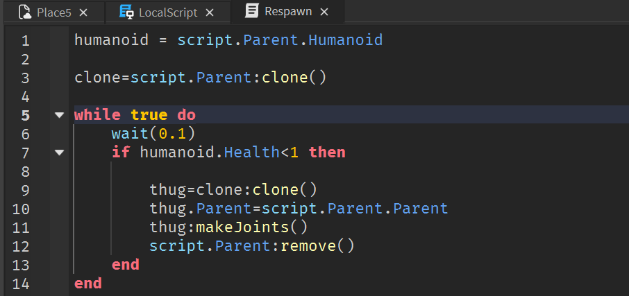Именно в этой части кода мы сможем добавить действия, которые найдут игрока, нанесшего последний урон и увеличить количество его денег.
Система тегов и отслеживания выстрелов игроков
Для отслеживания нанесения урона игроками, оружие в Roblox использует систему тегов. Каждый успешный выстрел по гуманоидной цели создает специальный объект ObjectValue, в который записывается ссылка на игрока, нанесшего урон.
Этот объект создается автоматически и добавляется в дочерние объекты компонента Humanoid противника. После добавления этот объект переименовывается в creator - это универсальное имя для тэгов урона от оружия. Именно благодаря тому, что это имя всегда одинаково, большинство скриптов и оружия в Roblox могут работать бесшовно, несмотря на то что были созданы разными людьми.
Вернемся к скрипту Respawn. Когда здоровье противника упадет ниже 1, скрипт должен найти игрока, нанесшего последний урон и начислить ему награду за победу.
Чтобы найти игрока, нужно найти тэг внутри компонента Humanoid и прочесть его значение - это прямая ссылка на игрока. Введем переменную и запишем в нее результат поиска дочернего тега по имени "creator":
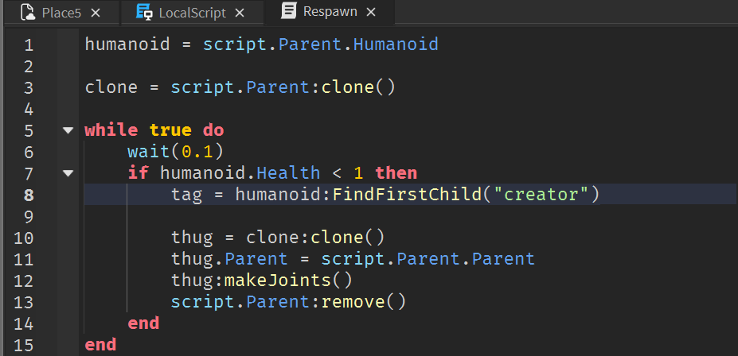Скорее всего, противник умрет от действий игрока, однако он также может погибнуть и от падения за пределы карты, ловушек, урона от другого противника и других действий, не связанных с игроком. В таком случае тэга внутри Humanoid может не оказаться и, если мы попытаемся обратиться к нулевому значению, скрипт сломается и перестанет работать.
Поэтому обязательно добавим проверку на валидность значения:
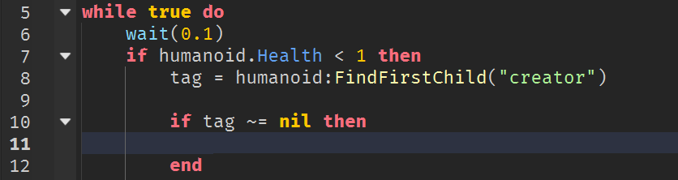После этого обратимся к переменной Cash и увеличим ее значение на 200:
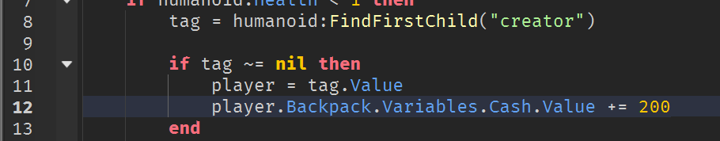Чтобы проверить работу скрипта, добавьте стартовое оружие из тулбокса. Большинство оружия работает правильно, однако зачастую можно случайно добавить сломанное или неправильно запрограммированное вооружение, ломающее игру.
В случае, если после запуска игры вы не сможете ее закрыть (пропал курсор), воспользуйтесь горячей клавишей Shift-F5, чтобы принудительно завершить игру. После этого удалите сломанное оружие из папки StarterPack.
Запустите игру, убейте бандита и проверьте, изменилось ли значение в интерфейсе.
Домашкаа 😁
Необходимо доделать то, что не вы не успели сделать на предыдущем и текущем занятиях.
Также нужно подумать над тем, какие объекты вы бы хотели продавать в своём магазине и по какой цене.